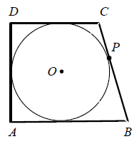
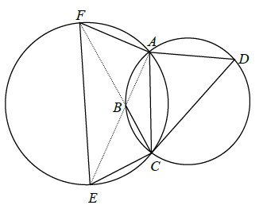

Jesteś tutaj: Matura
rozszerzona - kurs - część 31 - zadania
Matura rozszerzona - kurs - część 31 - zadania
Cały kurs na: ./matematyka-matura-rozszerzona-kurs.html.
Rysunek przedstawia trapez równoramienny \(ABCD\) opisany na okręgu o środku \(S\)
i promieniu \(r=\frac{\sqrt{91}}{2}\). Dolna podstawa trapezu jest o \(6\) dłuższa od górnej
podstawy. Oblicz obwód trapezu \(ABCD\).
\(40\)
W trapez prostokątny \(ABCD\) wpisano okrąg o środku \(O\), który w punkcie \(P\)
jest styczny do dłuższego ramienia \(BC\) tego trapezu (zobacz rysunek). Wykaż, że jeżeli \(|BP|=p\)
i \(|CP|=q\), to obwód trapezu jest równy \(2(\sqrt{p}+\sqrt{q})^2\). 
Okrąg \(o_1\) jest opisany na czworokącie \(ABCD\), natomiast \(o_2\) jest opisany
na czworokącie \(AFEC\) (zobacz rysunek). Punkty \(A\), \(B\), \(E\) są współliniowe i zachodzi
równość \(|\sphericalangle BFE|=|\sphericalangle CDB|\). Udowodnij, że punkty \(F\), \(B\), \(C\) są
współliniowe. 
Wartość wyrażenia \(\sin (2\alpha -\beta )\) jest równa
A.\( \frac{1}{2} \)
B.\( \frac{\sqrt{2}}{2} \)
C.\( \frac{\sqrt{3}}{2} \)
D.\( 1 \)
C
Dwusieczne czworokąta \(ABCD\) wpisanego w okrąg przecinają się w czterech różnych
punktach: \(P\), \(Q\), \(R\), \(S\) (zobacz rysunek).  Wykaż, że na czworokącie \(PQRS\) można opisać okrąg.
Wykaż, że na czworokącie \(PQRS\) można opisać okrąg.
Wykaż, że na czworokącie \(PQRS\) można opisać okrąg.Dany jest prostokąt \(ABCD\). Okrąg wpisany w trójkąt \(BCD\) jest styczny do
przekątnej \(BD\) w punkcie \(N\). Okrąg wpisany w trójkąt \(ABD\) jest styczny do boku \(AD\) w
punkcie \(M\), a środek \(S\) tego okręgu leży na odcinku \(MN\), jak na rysunku.  Wykaż, że \(|MN|=|AD|\).
Wykaż, że \(|MN|=|AD|\).
Wykaż, że \(|MN|=|AD|\).